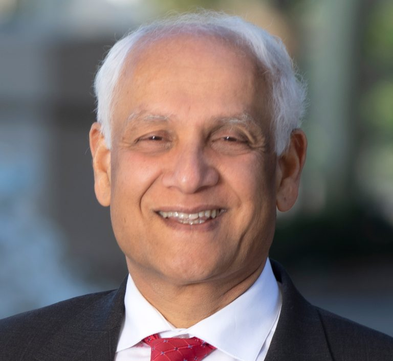
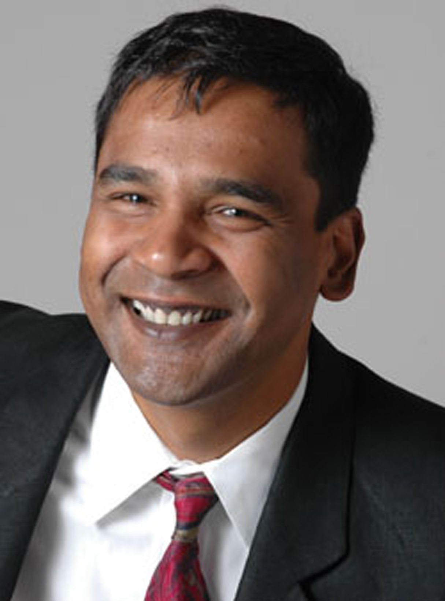
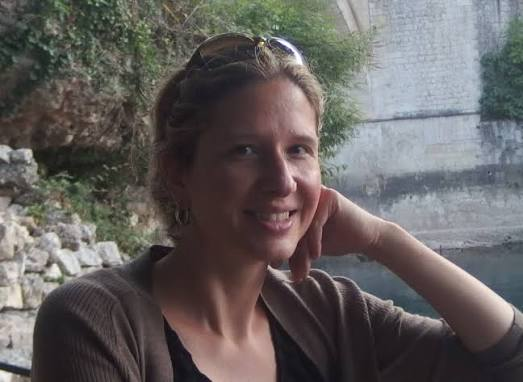

Pramod P. Khargonekar
University of California, Irvine
AI Data Centers and Electric Power Grids: Challenges and Opportunities
Workshop on
IEEE Conference on Decision and Control (CDC), Honolulu, Hawaii, USA, 2026
The explosive growth of artificial intelligence (AI) workloads is reshaping electric power systems at an unprecedented pace. Hyperscale and AI-focused data centers, with single-site loads now reaching hundreds of megawatts, are placing extraordinary new demands on transmission and distribution networks, electricity markets, and decarbonization roadmaps. The rapid pace of buildout has created a tight coupling between computing infrastructure and the power grid: the timing and location of new compute capacity now directly affect grid reliability, time-to-power, capacity adequacy, electricity prices, and emissions. At the same time, the inherent flexibility of compute workloads, the spatial and temporal flexibility of AI training and inference, and behind-the-meter resources at data centers offer unique opportunities for closed-loop coordination with the grid.
This emerging challenge sits squarely at the intersection of systems, control, optimization, and learning. It calls for new tools to model the bidirectional coupling between data centers and the grid, new market and tariff designs that align computing decisions with grid needs, new control architectures for grid-aware workload management and demand response, and new planning frameworks that internalize uncertainty in AI-driven load growth.
The workshop is designed to provide attendees with a coherent overview of the rapidly evolving research landscape at the data center–power grid interface; catalyze conversations between systems-and-control researchers and the energy-and-AI infrastructure communities; and seed new collaborations between academia and industry, including hyperscale operators.

University of California, Irvine
AI Data Centers and Electric Power Grids: Challenges and Opportunities

University of California, Berkeley
Tariff Design for Large-Load Data Centers under Demand Ambiguity

California Institute of Technology
Asset or Burden: Navigating the Community Impact of Data Centers

Harvard University
Transmission Expansion Planning Under Discrete Realization Uncertainty of Data Center Deployments

Carbon and Power Aware Computing at Google
Purdue University
Designing Grid-Aware Dynamic Specifications for Large Load Demands
University of Washington
Data Center Loads in Electricity Markets with Budget Constrained Customers
Purdue University
Unlocking Grid Capacity for AI Data Centers via Flexible Interconnection and Cross-Sector Couplings
Dartmouth College
Flexible Capacity Mechanism Design for Load Growth in Power Grids
University of Alberta
Caching and Accelerator Scheduling for Sustainable AI Load Serving
Each 35-minute invited-speaker slot includes a 30-minute presentation and 5 minutes for Q&A. Times are shown in Hawaii Standard Time.
| Time | Speaker(s) | Title / Activity |
|---|---|---|
| 8:30–8:50 a.m. | Junjie Qin and Kameshwar Poolla | Opening remarks and workshop overview |
| 8:50–9:25 a.m. | Pramod P. Khargonekar | AI Data Centers and Electric Power Grids: Challenges and Opportunities |
| 9:25–10:00 a.m. | Zhijie Lai, Kameshwar Poolla | Tariff Design for Large-Load Data Centers under Demand Ambiguity |
| 10:00–10:15 a.m. | — | Coffee Break |
| 10:15–10:50 a.m. | Adam Wierman | Asset or Burden: Navigating the Community Impact of Data Centers |
| 10:50–11:25 a.m. | Le Xie | Transmission Expansion Planning Under Discrete Realization Uncertainty of Data Center Deployments |
| 11:25 a.m.–12:00 p.m. | Ana Radovanović | Carbon and Power Aware Computing at Google |
| 12:00–2:00 p.m. | — | Lunch Break |
| 2:00–2:35 p.m. | Vassilis Kekatos | Designing Grid-Aware Dynamic Specifications for Large Load Demands |
| 2:35–3:10 p.m. | Baosen Zhang | Data Center Loads in Electricity Markets with Budget Constrained Customers |
| 3:10–3:45 p.m. | Junjie Qin | Unlocking Grid Capacity for AI Data Centers via Flexible Interconnection and Cross-Sector Couplings |
| 3:45–4:00 p.m. | — | Coffee Break |
| 4:00–4:35 p.m. | Cong Chen | Flexible Capacity Mechanism Design for Load Growth in Power Grids |
| 4:35–5:10 p.m. | Yize Chen | Caching and Accelerator Scheduling for Sustainable AI Load Serving |
| 5:10–5:30 p.m. | Organizers and speakers | Closure and Discussions |
The program order is tentative and subject to final speaker confirmation.
Purdue University, Elmore Family School of Electrical and Computer Engineering
University of California, Berkeley, Electrical Engineering & Computer Sciences and Mechanical Engineering
Purdue University, Elmore Family School of Electrical and Computer Engineering